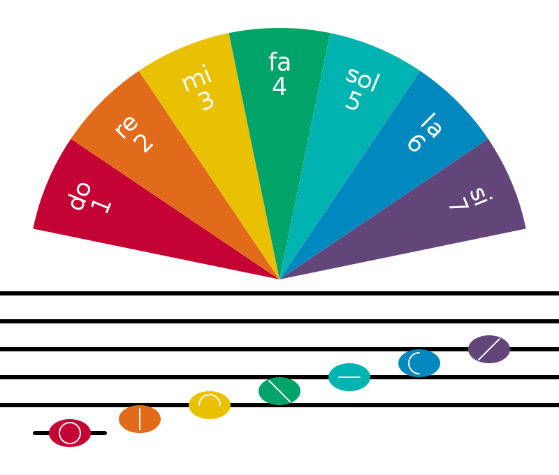

In modern Solresol, the definitions of sisol and sila are part of an honorifics system inspired by what is used in Japanese; both are gender-neutral titles, one to be respectful, and one to be affectionate. Pronouns do not change depending on gender. Instead, they are simply translated into English as neutral pronouns; it and they.

The words in Solresol consist of sequences of notes.
Invented by Jean-François Sudre, Solresol is an artificial language based on the seven syllables of Music(do, re, mi, fa, sol, la, si). There are no specific pronunciation rules beyond the standard readings of the solfège.
Due to each syllable being fairly distinct, they may be pronounced in almost any way the reader prefers, but it is necessary to leave a brief pause between words so that each word remains clearly separate. It is absolutely unnecessary to be familiar with music to learn and to speak this language.
The language has seven words of one note, 49 words of two notes, and so forth. Here are the words of one note:
| Solfège | French IPA | English IPA | Meaning |
|---|---|---|---|
| Do | /do/ | /doʊ/ | no |
| Re | /ʁɛ/ | /ɹeɪ/ | and, also |
| Mi | /mi/ | /miː/ | or, even |
| Fa | /fa/ | /fɑː/ | at, to |
| Sol | /sɔl/ | /soʊl/ | if |
| La | /la/ | /lɑː/ | the, then |
| Si | /si/ | /siː/ | yes |
Words of 2 notes are used for pronouns, common particles and those with repeated syllables are tenses. Here are the words of two notes:
| -do | -re | -mi | -fa | -sol | -la | -si/-ti | |
|---|---|---|---|---|---|---|---|
| Do- | (past) | I, me | you(sing.) | she, he, they(sing.) | self, oneself | one, someone | unequal, different |
| Re- | my, mine | (pluperfect) | your, yours(sing.) | hers, his, their(sing.) | our, ours | your, yours(plur.) | their, theirs(plur.) |
| Mi- | for, in order to/that | who, which | (future) | whose, of which | well(adv) | here/there is | good evening/night |
| Fa- | what? | that one | this, that | (conditional) | why | good | much, very |
| Sol- | but | why? | wrong, ill(adv) | because | (imperative) | perpetually, always | thank, thanks |
| La- | nothing, nobody | by | here, there | bad | never | (present participle) | of |
| Si- | equal, same | each, every | good morning/afternoon | few, scarcely | * | * | (passive participle) |
A unique feature of Solresol is that meanings can be inverted by reversing the syllables in words. For instance fala means good or tasty, and lafa means bad. Interruptions in the logical order of words in each category are usually caused by these reversible words. Here are some examples:
| misol good | solmi evil |
| fala good, tasty | lafa bad |
| solla always | lasol never |
| fasi much, very | sifa little, scarcely |
| misisol good fortune, happiness | solsimi misfortune |
| solsi climb, ascend | sisol descend |
| solsifa laugh | fasisol weep, sob |
| simila ease | lamisi difficulty |
| fasimisi advance | simisifa draw back, retreat |
Grammar
To keep sentences clear, especially with the possibility of information loss while communicating, certain parts of speech follow a strict word order. Adjectives always follow the noun they modify. Indirect objects always come after the verb. Tenses always precede verbs. To make a word plural, lengthening the last syllable is sometimes used, but personally, I think counting-type words are enough to make it explicit.
Affirmative statements are indicated by moving the personal pronoun afterward:
- redofafa dore My health is good.
- fadoremi dore I will go to the countryside.
- soldoremi dore I will go to the theatre.
Questions are indicated by placing the subject of the sentence after the verb instead of before the verb.
- faremi dore Am I?
- falafa dofa Does he understand?
- sidosi domi Are you learning?
Negation is indicated by placing do before the word to be negated and is not repeated unnecessarily.
- do sol fasifa lami Let's not go there
- dore do fasifa fasolre I don't want to leave.
- dore farefa lasi lami We never go there.
Verb Tenses
Active verbs use the auxiliary verb famisol(to have) and passive verbs use the auxiliary verb faremi(to be).
| Tense | Solresol | English |
|---|---|---|
| Present infinitive | falare | to be able to |
| Past infinitive | famisol falare | to have been able to |
| Present subjunctive | mire dore falare | That I am able to |
| Imperfect past | dore dodo falare | I could |
| Simple past | dore rere falare | I could |
| Future | dore mimi falare | I will be able to |
| Conditional | dore fafa falare | I might be able to |
| Imperative | dore solsol falare | Know that you can |
| Present | lala falare | Able |
| Past Participle | sisi falare | Was able |
Modality
Solresol uses two words to indicate four modifications of the same idea. Placed before an adjective, fasi is augmentative, and placed after an adjective is the superlative.
- fala good
- fasi fala very good
- fala fasi extremely good
It is the same for substantives. Placed before an adjective, sifa is diminutive, and placed after an adjective is the further diminutive.
- sisire sifa gentle breeze
- sifa sisire breeze
- sisire wind
- fasi sisire gale
- sisire fasi violent gale
Numbers
The numeration proceeds by periods of six numbers, each number being a name made of three notes, never repeating the same note three times. From one to six, words begin with re, the second note is discriminating and repeated once, with the exception of re. From seven to twelve, the two first notes are mimi, the third one being cyclical, mi not being represented.
We then go to the next series, from thirteen to eighteen, which first note is mi and the second cycling from do to si (bypassing mi) and repeated once. The next series goes from nineteen to sixty, then go to eighty, then to the powers of ten. To mean 0, we use the word for nothing.
- 0 soldo
- 1 redodo
- 2 remimi
- 3 refafa
- 4 resolsol
- 5 relala
- 6 resisi
- 7 mimido
- 8 mimire
- 9 mimifa
- 10 mimisol
- 11 mimila
- 12 mimisi
- 13 midodo
- 14 mirere
- 15 mifafa
- 16 misolsol
- 17 milala
- 18 misisi
- 19 fafado
- 20 fafare
- 30 fafami
- 40 fafasol
- 50 fafala
- 60 fafasi
- 70 fafasi mimisol
- 80 fadodo
- 90 fadodo mimisol
- 100 farere
- 1,000 famimi
- million fasolsol
- billion falala
- trillion fasisi
Proper Nouns
Sudre originally drafted a phonetic alphabet, but had no examples of its usage, and the little that was described outlined a very cumbersome system. Someone on the Sidosi forum suggested an elegant system similar to Katakanas in which syllables may can combined to create a secondary set of syllables, practical for approximating words of other languages.
| redo | = ro | remi | = ri | rela | = ra |
| dore | = de | dofa | = da | dosi | = di |
| mire | = me | mido | = mo | mifa | = ma |
| fare | = fe | fado | = fo | fasi | = fi |
| lare | = le | lado | = lo | lasi | = li |
| sire | = se | sido | = so | sila | = sa |
Useful Phrases
- simi hello
- redofafa how are you?
- dore redofafa, re domi I'm good, and you?
- fado resisolre domi What's your name?
- resisolre dore faremi My name is ...
- fasidomi misol Have a good journey
- dore do dofadofa I don't know
- dore falafa I understand
- dore do falafa I don't understand
- domilado domi English? Do you speak English?
- si sifa Yes, a little
Accessibility
To communicate to a deaf-mute, one can take the hand of a blind person and alternately press the fingers, as in the mute Universal Language. One can see that the three extended fingers replace the three lines of the musical scale. For the repeated notes, one makes the same sign two times with the hand.

Two people facing each other at a distance, can communicate using the stenographic symbols in such a way that only they can see them. In this manner, a prisoner can, through the bars of the window, express thoughts to the outside world, and vice-versa. One can make use of Solresol at sea, to communicate from one ship to another, or from a ship to a seaport, or vice-versa, and again in many ways: By displaying from a distance enlarged versions of the stenographic signs or the first seven numbers hollowed out and illuminated, if at night. Or, by displaying bright lanterns or fires of the 7 colors.

| Frequencies(Hz) | ||
|---|---|---|
| Do | C | 261.6 |
| Re | D | 293.7 |
| Mi | E | 329.6 |
| Fa | F | 349.2 |
| Sol | G | 392.0 |
| La | A | 440.0 |
| Si | B | 493.9 |
Curwen hand signs often go along with solfa scale. These provides a movement to go along with the pitch that we're singing. Moving our bodies at the same time as singing, and thinking and using our voices gives us another way to understand what we're doing. It engages another part of our brains, which means that we work more actively and understand what we're doing.

Encoding
The Shavian alphabet was originally a constructed alphabet conceived as a way to provide phonemic orthography for the English language. It conveniently includes glyphs to match Vincent Gajewski's stenography based on the Curwen hand shapes.
| do | re | mi | fa | sol | la | si | |
| Shavian | 𐑴 | 𐑦 | 𐑵 | 𐑳 | 𐑯 | 𐑤 | 𐑨 |
| Ascii | o | l | n | 7 | z | c | j |
A possible binary expression of Solresol needs to be capable of packing 7 syllables, a stop and a forte modifier. The mod bit on the spacer encode is a break.
| binary | hex | ||||
|---|---|---|---|---|---|
| mod | value | ||||
| 0 | 0 | 0 | 0 | 0 | spacer |
| 0 | 0 | 0 | 1 | 1 | do |
| 0 | 0 | 1 | 0 | 2 | re |
| 0 | 0 | 1 | 1 | 3 | mi |
| 0 | 1 | 0 | 0 | 4 | fa |
| 0 | 1 | 0 | 1 | 5 | sol |
| 0 | 1 | 1 | 0 | 6 | la |
| 0 | 1 | 1 | 1 | 7 | si |
- Official Examples
- Counting in Solresol
- Solresol Grammar
- Original character by Elemenopi, drawn by Rek Bellum.
Ternary Solrela
The following 3 syllables common words are ordered alphabetically, the original religious terms were replaced as per this document.
| do | do | dododo | -- |
|---|---|---|---|
| dodore | world, earth, globe, land | ||
| dodomi | seasons | ||
| dodofa | winter | ||
| dodosol | spring | ||
| dodola | summer | ||
| dodosi | autumn | ||
| re | doredo | time | |
| dorere | january | ||
| doremi | day | ||
| dorefa | week | ||
| doresol | month | ||
| dorela | year | ||
| doresi | century | ||
| mi | domido | universe, creation | |
| domire | infinity, unlimited, endless, undefined, immensity, unbounded, immeasurable | ||
| domimi | february | ||
| domifa | providence, providential, welfare | ||
| domisol | -- | ||
| domila | eternize, perpetuate, eternal, eternity | ||
| domisi | immortalize, immortal, indestructible, imperishable | ||
| fa | dofado | majesty, grandeur, magnitude, imposing, majestic | |
| dofare | supreme, sovreign | ||
| dofami | magnificence, splendor, superb | ||
| dofafa | march | ||
| dofasol | marvel, wonder | ||
| dofala | miracle, supernatural, miraculous | ||
| dofasi | adore, worship | ||
| sol | dosoldo | be hungry | |
| dosolre | eat | ||
| dosolmi | food | ||
| dosolfa | by thirsty | ||
| dosolsol | april | ||
| dosolla | drink | ||
| dosolsi | water | ||
| la | dolado | charity, charitable, charitably | |
| dolare | philanthropy, philanthropist | ||
| dolami | despise, contempt, contemptuous | ||
| dolafa | sympathize, pity, compassion | ||
| dolasol | inexcusable, unforgivable | ||
| dolala | may | ||
| dolasi | incomparable, invaluable, unparalleled, without equal | ||
| si | dosido | help, aid, assist, rescue | |
| dosire | support, base | ||
| dosimi | unfaithfulness, infidelity | ||
| dosifa | accomplish, fulfill | ||
| dosisol | duty, obligation | ||
| dosila | noble, ennobled, dignity, worthy, just, pride | ||
| dosisi | june | ||
| re | do | redodo | 1 |
| redore | think, philosophy, philosopher, philosophical | ||
| redomi | loathe, repugnance, repulsive | ||
| redofa | moral, morally, moralize | ||
| redosol | be aquainted | ||
| redola | proverb, maxim | ||
| redosi | honor, honorable, venerable, respectable | ||
| re | reredo | july | |
| rerere | -- | ||
| reremi | august | ||
| rerefa | september | ||
| reresol | october | ||
| rerela | november | ||
| reresi | december | ||
| mi | remido | limit, confine, border, circumscribe | |
| remire | merit, be worthy of, laudable, praised | ||
| remimi | 2 | ||
| remifa | benevolence, well-doing | ||
| remisol | alms, charity | ||
| remila | give, gift, present | ||
| remisi | inexplicable, indefinable, incomprehensible, inconceiveable, enigmatic | ||
| fa | refado | look at, notability, significant, fame | |
| refare | cross-over, dignities, honors, honorary | ||
| refami | displease, unpleasant, uncomfortable | ||
| refafa | 3 | ||
| refasol | encounter, meet, indelible (uneraseable) | ||
| refala | ask, privilege, prerogative | ||
| refasi | answer, reply, respond, qualify, rights | ||
| sol | resoldo | listen, doubt, skepticism, skeptical | |
| resolre | err, mistake, error, wrong | ||
| resolmi | leave, come out of | ||
| resolfa | return | ||
| resolsol | 4 | ||
| resolla | pay, materialism, materialistic, materialize | ||
| resolsi | discourage, discouragement, tedious | ||
| la | relado | be sleepy, misanthropy, misanthrope | |
| relare | antagonize, thwart, inconvenience, annoying, bother | ||
| relami | distrust, suspect, beware, skittish | ||
| relafa | impossible, impracticable, impossibility | ||
| relasol | intolerance, severity, rigorism, inflexible, rigid | ||
| relala | 5 | ||
| relasi | regret, be sorry, repent, rue | ||
| si | resido | mistreat, bully, maltreatment, brutality, rudeness | |
| resire | toughen, hard, hardness, tough | ||
| resimi | spite, bad mood/attitude, sulky, grumpiness, cantankerous, recalcitrant | ||
| resifa | become | ||
| resisol | to be sad, sadness, gloom, melancholy, sad | ||
| resila | bored, boredom | ||
| resisi | 6 | ||
| mi | do | midodo | 13 |
| midore | sympathy, inclination, sympathize, take pleasure | ||
| midomi | attract, draw, appeal to | ||
| midofa | prefer, like the most | ||
| midosol | admire | ||
| midola | reciprocity, mutuality, respective, vice versa | ||
| midosi | fond of, attached, be attached to, friend, friendly, take to | ||
| re | miredo | love each other, agree | |
| mirere | 14 | ||
| miremi | beloved, darling, dear, dearly loved | ||
| mirefa | tenderness, kindness, loving, tenderly, fondness, endearment | ||
| miresol | acknowledge, gratitude, recognition, be grateful | ||
| mirela | devote, focus, devote oneself, dedication | ||
| miresi | link, bond, chain, fasten | ||
| mi | mimido | 7 | |
| mimire | 8 | ||
| mimimi | -- | ||
| mimifa | 9 | ||
| mimisol | 10 | ||
| mimila | 11 | ||
| mimisi | 12 | ||
| fa | mifado | agreement, pleasure, enjoyment | |
| mifare | please, like, pleasant, seductive | ||
| mifami | sigh | ||
| mifafa | 15 | ||
| mifasol | raise, elevate, uplift, high | ||
| mifala | desire, wish, want, desirous | ||
| mifasi | incorrigible, unable to be corrected | ||
| sol | misoldo | the Come | |
| misolre | enter | ||
| misolmi | sweetness, pleasantness, smooth, even-tempered | ||
| misolfa | benevolence, affability, goodwill | ||
| misolsol | 16 | ||
| misolla | equal, equality, equally | ||
| misolsi | amiability, kindness, kind, pleasant | ||
| la | milado | appraise, estimate, consider | |
| milare | confide, confidence | ||
| milami | be passionate, passion, ardor, ardently | ||
| milafa | idolize, dote on, idolatry | ||
| milasol | love (for things) | ||
| milala | 17 | ||
| milasi | love, cherish, lover, enamored | ||
| si | misido | fidelity, fathfulness, loyalty | |
| misire | to last, durable, stability, permanent, duration | ||
| misimi | to get engaged, engagement, fiancé | ||
| misifa | marry, marriage, husband, wife, spouse | ||
| misisol | to be lucky, luck, fortune, fortunate, lucky, fortunately, luckily | ||
| misila | enjoy, enjoyment, pleasure, delirium, intoxicated, drunk | ||
| misisi | 18 | ||
| fa | do | fadodo | 80 |
| fadore | immoral, immorality, without principles | ||
| fadomi | letter (mail), missive, epistle | ||
| fadofa | date, era | ||
| fadosol | to sign, signature | ||
| fadola | stamp, seal | ||
| fadosi | end, complete, finish, final, finally, termination, achieve | ||
| re | faredo | contact, address, send a letter | |
| farere | 100 | ||
| faremi | be, exist (auxiliary) | ||
| farefa | go, proceed | ||
| faresol | lengthen, extend, extension, elongation | ||
| farela | mail, post, post office | ||
| faresi | inexactitude, inaccuracy, inexact | ||
| mi | famido | free, exempt, enfranchisement, emancipate | |
| famire | serve, evil, wicked, malignant, harmful, maleficence | ||
| famimi | 1000 | ||
| famifa | stamp, postmark (verb) | ||
| famisol | have (auxiliary), possess, own, get | ||
| famila | postman, courier, mail | ||
| famisi | carry, bring, portable | ||
| fa | fafado | 19 | |
| fafare | 20 | ||
| fafami | 30 | ||
| fafafa | -- | ||
| fafasol | 40 | ||
| fafala | 50 | ||
| fafasi | 60 | ||
| sol | fasoldo | cause, because of, due to | |
| fasolre | to leave | ||
| fasolmi | malice, unkindness, ill will, disparaging, malignancy | ||
| fasolfa | act, behave, conduct | ||
| fasolsol | million | ||
| fasolla | do, make, action, doable, commit | ||
| fasolsi | prepare, make ready, preparation | ||
| la | falado | have to (auxiliary) | |
| falare | able, can, may, possible, practicability | ||
| falami | means, resources, by means of, via | ||
| falafa | understand, intellect | ||
| falasol | disfavor, disrepute, disgrace | ||
| falala | billion | ||
| falasi | trend, tendency, inclination to, disposition | ||
| si | fasido | walk, step | |
| fasire | information, inquire, investigate | ||
| fasimi | divorce, disown, repudiate, unmarry | ||
| fasifa | want (to do something) (for desires and wanting things, see "mifala") | ||
| fasisol | cry, weep, sob, tears | ||
| fasila | decide, determine, resolve, decision, resolution | ||
| fasisi | trillion | ||
| sol | do | soldodo | sunday |
| soldore | copy, transcribe, transcription | ||
| soldomi | imitate, forge, mimic, emulate, counterfeit | ||
| soldofa | example, model, type | ||
| soldosol | translate, interpret, translation, interpreter | ||
| soldola | comment, commentary, commentator | ||
| soldosi | tradition, traditionally, traditional | ||
| re | solredo | imply, implied | |
| solrere | the past | ||
| solremi | ingratitude, disregarding, ungrateful | ||
| solrefa | shorten, abbreviate, concise, terse, succinct, brief | ||
| solresol | language, idiom, dialect, linguistics, philology | ||
| solrela | dictionary, vocabulary, glossary | ||
| solresi | irregularity, anomaly, irregular | ||
| mi | solmido | devil, satan, lucifer, demon, satanic | |
| solmire | verb, noun, adjective, adverb | ||
| solmimi | the present | ||
| solmifa | article | ||
| solmisol | pronoun | ||
| solmila | remember, recollection, commemorate, memorial, souvenir | ||
| solmisi | complicate, complication, make difficult | ||
| fa | solfado | neutral, neutrality | |
| solfare | delete, erase, cross out, strike out, efface | ||
| solfami | lower, diminish, step down | ||
| solfafa | the future | ||
| solfasol | intimidate, bully, to trouble | ||
| solfala | let, allow | ||
| solfasi | impatient, irritable, impatience, chafe | ||
| sol | solsoldo | monday | |
| solsolre | tuesday | ||
| solsolmi | wednesday | ||
| solsolfa | thursday | ||
| solsolsol | -- | ||
| solsolla | friday | ||
| solsolsi | saturday | ||
| la | sollado | excuse, exonerate, pardon, pardonable, excusable | |
| sollare | tolerate, bear, indulge, indulgence, tolerance | ||
| sollami | forgive, pardon, amnesty, mercy, forgiveness | ||
| sollafa | favor, favorite, favorable, prefer | ||
| sollasol | permit, allow, authorize, permission | ||
| sollala | hour | ||
| sollasi | climb, mount, rise, climbing, ascent | ||
| si | solsido | run, gallop, race, runner | |
| solsire | to be happy, happiness, joy, playfulness, elation, happy, gay, joyful, perky, merrily, cheerfully, happily | ||
| solsimi | to be unlucky, misfortune, setback, calamity, disaster, unfortunate | ||
| solsifa | laugh, hilarity, laughing | ||
| solsisol | smile, grin, smiling | ||
| solsila | skip, hop, jump, pounce, frolic | ||
| solsisi | minute | ||
| la | do | ladodo | temperature |
| ladore | college, high school, institution, university, teacher, professor, headmaster | ||
| ladomi | school, student, pupil, disciple | ||
| ladofa | read, reading, reader, readable, legibly | ||
| ladosol | book, volume, tome | ||
| ladola | preface, foreword, preamble, introduction | ||
| ladosi | book, word, term | ||
| re | laredo | alphabet, alphabetical(ly) | |
| larere | fog | ||
| laremi | spell, spelling | ||
| larefa | syllable, syllabic, monosyllable, monosyllabic | ||
| laresol | lesson, instruction | ||
| larela | phrase, sentence | ||
| laresi | distraction, inattention, inadvertently, inattentive, carelessness, disapplied | ||
| mi | lamido | temporary, fleeting | |
| lamire | write, writing, writer | ||
| lamimi | humid | ||
| lamifa | pen | ||
| lamisol | forget, overlook, neglect, forgetful, omit | ||
| lamila | ink, inkwell | ||
| lamisi | difficulty, trouble, hardness | ||
| fa | lafado | paper, sheet of paper, parchment | |
| lafare | page, leaf, flip/thumb through | ||
| lafami | notebook, portfolio | ||
| lafafa | snow | ||
| lafasol | manuscript, scroll, writing | ||
| lafala | text, textual, verbatim, to the letter | ||
| lafasi | subject, topic, thesis, theme | ||
| sol | lasoldo | pencil | |
| lasolre | pencil, sketch | ||
| lasolmi | inequality, unequal, uneven | ||
| lasolfa | undo, undone | ||
| lasolsol | frost, ice | ||
| lasolla | align, line, row | ||
| lasolsi | draw, trace | ||
| la | lalado | dawn | |
| lalare | day, daylight | ||
| lalami | meteorology, meteor | ||
| lalafa | morning | ||
| lalasol | evening | ||
| lalala | -- | ||
| lalasi | night | ||
| si | lasido | point, the main idea | |
| lasire | have fun, enjoy, be delighted, entertainment, amuse | ||
| lasimi | penalty, displeasure, tribulation, pain, punishment | ||
| lasifa | hesitate, go with uncertainty, irresolution, indecisive | ||
| lasisol | punctuate, punctuation | ||
| lasila | punctuation mark, question mark, exclamation point, comma | ||
| lasisi | cold | ||
| si | do | sidodo | atmosphere, air |
| sidore | dishonor, degrade, defile, humiliate | ||
| sidomi | enmity, hostility, enemy, opponent, antagonist, hostile | ||
| sidofa | start, begin, commence | ||
| sidosol | study | ||
| sidola | progress, progressive | ||
| sidosi | learn, learning, education, apprenticeship | ||
| re | siredo | grammar, syntax, grammatically | |
| sirere | star, planet, comet | ||
| siremi | spell, spelling, orthography, orthographic | ||
| sirefa | accuracy, exactitude, punctuality, assiduity | ||
| siresol | regular, symmetric, symmetry, correct | ||
| sirela | attention, take care, contemplation, be careful | ||
| siresi | apply, applied, studious, studiously | ||
| mi | simido | distinguish, differentiate, discern, difference, nuance, | |
| simire | explain, define, demonstrate, expound, definition, explanation | ||
| simimi | moon, lunar | ||
| simifa | meaning, significance | ||
| simisol | simplify, make easy, simple, elementary | ||
| simila | facilitate, make easy, aid, easy | ||
| simisi | clarify, lighten, elucidate, explicit, clarity, conceivable | ||
| fa | sifado | dictate, dictation, read out | |
| sifare | fault, defect, failure, defective, failed | ||
| sifami | correct, reform, correction, reformation | ||
| sifafa | sun, solar | ||
| sifasol | wait, patience, patient | ||
| sifala | repeat, recapitulate | ||
| sifasi | reiterate, renew, again | ||
| sol | sisoldo | compete, contest | |
| sisolre | encourage, embolden, stimulate | ||
| sisolmi | inspect, review, inspector, inspection | ||
| sisolfa | review, scrutinize, investigate | ||
| sisolsol | shine, radiate, radiation | ||
| sisolla | analyze, analysis, analyst, analytical | ||
| sisolsi | question, interrogate, query | ||
| la | silado | compare, comparison, similarity, similitude, comparable | |
| silare | crown, tiara, coronation, crowned | ||
| silami | hate, detest, abhor, hatred, animosity, aversion | ||
| silafa | unable, unfit, incapable, inept | ||
| silasol | down, descent, go down | ||
| silala | sky, firmament | ||
| silasi | medal, medallion | ||
| si | sisido | rain, shower, downpour | |
| sisire | wind, breeze | ||
| sisimi | cloud, cloudy | ||
| sisifa | lightning, flash | ||
| sisisol | thunder, storm | ||
| sisila | heat, warm | ||
| sisisi | -- |
do re mi fa sol la si
incoming thousand rooms